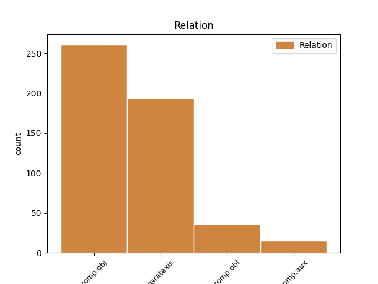
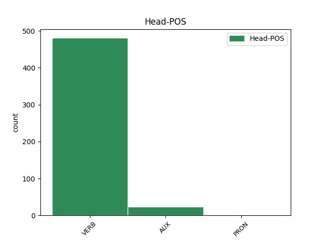
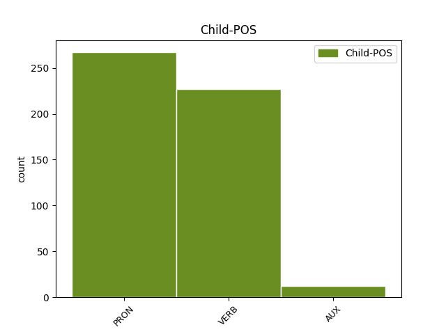

Distribution of features within this leaf



Agreement Rules sorted by frequency.
- When the dependent token is the parataxis(parataxis) of the head token,
1 Може _ _ _ _ 0 _ _ _
2 вона _ _ _ _ 0 _ _ _
3 і _ _ _ _ 0 _ _ _
4 жалілась _ _ _ _ 0 _ _ _
5 , _ _ _ _ 0 _ _ _
6 скажімо _ _ _ _ 0 _ _ _
7 , _ _ _ _ 0 _ _ _
8 на _ _ _ _ 0 _ _ _
9 чоловіка _ _ _ _ 0 _ _ _
10 - _ _ _ _ 0 _ _ _
11 мамі _ _ _ _ 0 _ _ _
12 , _ _ _ _ 0 _ _ _
13 священику _ _ _ _ 0 _ _ _
14 , _ _ _ _ 0 _ _ _
15 подругам _ _ _ _ 0 _ _ _
16 , _ _ _ _ 0 _ _ _
17 - _ _ _ _ 0 _ _ _
18 і _ _ _ _ 0 _ _ _
19 почула _ _ _ _ 0 _ _ _
20 " _ _ _ _ 0 _ _ _
21 що _ _ _ _ 0 _ _ _
22 поробиш поробити VERB Vmeif2s Aspect=Perf|Mood=Ind|Number=Sing|Person=2|Tense=Fut|VerbForm=Fin 0 _ _ _
23 , _ _ _ _ 0 _ _ _
24 терпи терпіти VERB Vmpm-2s Aspect=Imp|Mood=Imp|Number=Sing|Person=2|VerbForm=Fin 22 parataxis _ Id=399d|LTranslit=terpity|SpaceAfter=No|Translit=terpy
25 , _ _ _ _ 0 _ _ _
26 то _ _ _ _ 0 _ _ _
27 треба _ _ _ _ 0 _ _ _
28 терпіти _ _ _ _ 0 _ _ _
29 " _ _ _ _ 0 _ _ _
30 . _ _ _ _ 0 _ _ _
1 Але _ _ _ _ 0 _ _ _
2 що _ _ _ _ 0 _ _ _
3 б _ _ _ _ 0 _ _ _
4 ми _ _ _ _ 0 _ _ _
5 собі _ _ _ _ 0 _ _ _
6 не _ _ _ _ 0 _ _ _
7 нафантазували _ _ _ _ 0 _ _ _
8 , _ _ _ _ 0 _ _ _
9 правдою _ _ _ _ 0 _ _ _
10 буде _ _ _ _ 0 _ _ _
11 одне _ _ _ _ 0 _ _ _
12 - _ _ _ _ 0 _ _ _
13 відсутність _ _ _ _ 0 _ _ _
14 ресурсів _ _ _ _ 0 _ _ _
15 забрати _ _ _ _ 0 _ _ _
16 з _ _ _ _ 0 _ _ _
17 свого _ _ _ _ 0 _ _ _
18 життя _ _ _ _ 0 _ _ _
19 фактори _ _ _ _ 0 _ _ _
20 , _ _ _ _ 0 _ _ _
21 які _ _ _ _ 0 _ _ _
22 його воно PRON Pp-3n-san Case=Acc|Gender=Neut|Number=Sing|Person=3|PronType=Prs 23 comp:obj _ Id=3986|LTranslit=vono|Translit=joho
23 отруюють отруювати VERB Vmpip3p Aspect=Imp|Mood=Ind|Number=Plur|Person=3|Tense=Pres|VerbForm=Fin 0 _ _ _
24 . _ _ _ _ 0 _ _ _
1 Дівчата _ _ _ _ 0 _ _ _
2 - _ _ _ _ 0 _ _ _
3 товаришки _ _ _ _ 0 _ _ _
4 її _ _ _ _ 0 _ _ _
5 люблять _ _ _ _ 0 _ _ _
6 і _ _ _ _ 0 _ _ _
7 часто _ _ _ _ 0 _ _ _
8 дають давати VERB Vmpip3p Aspect=Imp|Mood=Ind|Number=Plur|Person=3|Tense=Pres|VerbForm=Fin 0 _ _ _
9 їй вона PRON Pp-3f-sdn Case=Dat|Gender=Fem|Number=Sing|Person=3|PronType=Prs 8 comp:obl _ Id=33di|LTranslit=vona|Translit=jij
10 чого _ _ _ _ 0 _ _ _
11 їсти _ _ _ _ 0 _ _ _
12 — _ _ _ _ 0 _ _ _
13 такого _ _ _ _ 0 _ _ _
14 , _ _ _ _ 0 _ _ _
15 що _ _ _ _ 0 _ _ _
16 з _ _ _ _ 0 _ _ _
17 дому _ _ _ _ 0 _ _ _
18 приносять _ _ _ _ 0 _ _ _
19 . _ _ _ _ 0 _ _ _
1 Через _ _ _ _ 0 _ _ _
2 подорожчання _ _ _ _ 0 _ _ _
3 , _ _ _ _ 0 _ _ _
4 зазначають _ _ _ _ 0 _ _ _
5 аналітики _ _ _ _ 0 _ _ _
6 , _ _ _ _ 0 _ _ _
7 знизяться _ _ _ _ 0 _ _ _
8 платежі _ _ _ _ 0 _ _ _
9 , _ _ _ _ 0 _ _ _
10 а _ _ _ _ 0 _ _ _
11 кількість _ _ _ _ 0 _ _ _
12 людей _ _ _ _ 0 _ _ _
13 , _ _ _ _ 0 _ _ _
14 яким _ _ _ _ 0 _ _ _
15 немає немати VERB Vmpip3s Aspect=Imp|Mood=Ind|Number=Sing|Person=3|Polarity=Neg|Tense=Pres|VerbForm=Fin 17 comp:aux _ Id=3ani|LTranslit=nematy|Translit=nemaě
16 чим _ _ _ _ 0 _ _ _
17 буде бути AUX Vapif3s Aspect=Imp|Mood=Ind|Number=Sing|Person=3|Tense=Fut|VerbForm=Fin 0 _ _ _
18 платити _ _ _ _ 0 _ _ _
19 , _ _ _ _ 0 _ _ _
20 зросте _ _ _ _ 0 _ _ _
21 в _ _ _ _ 0 _ _ _
22 рази _ _ _ _ 0 _ _ _
23 . _ _ _ _ 0 _ _ _
Disagree Examples:
1 Щодо _ _ _ _ 0 _ _ _
2 неприхованого _ _ _ _ 0 _ _ _
3 обману _ _ _ _ 0 _ _ _
4 , _ _ _ _ 0 _ _ _
5 то _ _ _ _ 0 _ _ _
6 читання _ _ _ _ 0 _ _ _
7 приміток _ _ _ _ 0 _ _ _
8 до _ _ _ _ 0 _ _ _
9 нібито _ _ _ _ 0 _ _ _
10 академічного _ _ _ _ 0 _ _ _
11 дванадцятитомника _ _ _ _ 0 _ _ _
12 спричинює спричинювати VERB Vmpip3s Aspect=Imp|Mood=Ind|Number=Sing|Person=3|Tense=Pres|VerbForm=Fin 0 _ _ _
13 ледь _ _ _ _ 0 _ _ _
14 не _ _ _ _ 0 _ _ _
15 ментальний _ _ _ _ 0 _ _ _
16 ступор _ _ _ _ 0 _ _ _
17 ; _ _ _ _ 0 _ _ _
18 у _ _ _ _ 0 _ _ _
19 якийсь _ _ _ _ 0 _ _ _
20 момент _ _ _ _ 0 _ _ _
21 геть _ _ _ _ 0 _ _ _
22 перестаєш переставати VERB Vmpip2s Aspect=Imp|Mood=Ind|Number=Sing|Person=2|Tense=Pres|VerbForm=Fin 12 parataxis _ Id=008y|LTranslit=perestavaty|Translit=perestaěš
23 розуміти _ _ _ _ 0 _ _ _
24 , _ _ _ _ 0 _ _ _
25 як _ _ _ _ 0 _ _ _
26 же _ _ _ _ 0 _ _ _
27 то _ _ _ _ 0 _ _ _
28 Лариса _ _ _ _ 0 _ _ _
29 Косач _ _ _ _ 0 _ _ _
30 зберегла _ _ _ _ 0 _ _ _
31 свої _ _ _ _ 0 _ _ _
32 інтернаціоналістські _ _ _ _ 0 _ _ _
33 й _ _ _ _ 0 _ _ _
34 соціалістичні _ _ _ _ 0 _ _ _
35 переконання _ _ _ _ 0 _ _ _
36 та _ _ _ _ 0 _ _ _
37 симпатії _ _ _ _ 0 _ _ _
38 до _ _ _ _ 0 _ _ _
39 братнього _ _ _ _ 0 _ _ _
40 російського _ _ _ _ 0 _ _ _
41 народу _ _ _ _ 0 _ _ _
42 ( _ _ _ _ 0 _ _ _
43 одразу _ _ _ _ 0 _ _ _
44 ж _ _ _ _ 0 _ _ _
45 зазначу _ _ _ _ 0 _ _ _
46 , _ _ _ _ 0 _ _ _
47 що _ _ _ _ 0 _ _ _
48 північних _ _ _ _ 0 _ _ _
49 сусідів _ _ _ _ 0 _ _ _
50 вона _ _ _ _ 0 _ _ _
51 в _ _ _ _ 0 _ _ _
52 листах _ _ _ _ 0 _ _ _
53 послідовно _ _ _ _ 0 _ _ _
54 називала _ _ _ _ 0 _ _ _
55 кацапами _ _ _ _ 0 _ _ _
56 , _ _ _ _ 0 _ _ _
57 геть _ _ _ _ 0 _ _ _
58 не _ _ _ _ 0 _ _ _
59 толерувала _ _ _ _ 0 _ _ _
60 , _ _ _ _ 0 _ _ _
61 і _ _ _ _ 0 _ _ _
62 насправді _ _ _ _ 0 _ _ _
63 всі _ _ _ _ 0 _ _ _
64 ці _ _ _ _ 0 _ _ _
65 її _ _ _ _ 0 _ _ _
66 філіпіки _ _ _ _ 0 _ _ _
67 на _ _ _ _ 0 _ _ _
68 адресу _ _ _ _ 0 _ _ _
69 колонізаторки _ _ _ _ 0 _ _ _
70 - _ _ _ _ 0 _ _ _
71 московщини _ _ _ _ 0 _ _ _
72 якраз _ _ _ _ 0 _ _ _
73 і _ _ _ _ 0 _ _ _
74 вилучали _ _ _ _ 0 _ _ _
75 якнайстаранніш _ _ _ _ 0 _ _ _
76 ) _ _ _ _ 0 _ _ _
77 , _ _ _ _ 0 _ _ _
78 повсякчас _ _ _ _ 0 _ _ _
79 перебуваючи _ _ _ _ 0 _ _ _
80 , _ _ _ _ 0 _ _ _
81 коли _ _ _ _ 0 _ _ _
82 вірити _ _ _ _ 0 _ _ _
83 написаному _ _ _ _ 0 _ _ _
84 , _ _ _ _ 0 _ _ _
85 в _ _ _ _ 0 _ _ _
86 оточенні _ _ _ _ 0 _ _ _
87 злісних _ _ _ _ 0 _ _ _
88 українських _ _ _ _ 0 _ _ _
89 буржуазних _ _ _ _ 0 _ _ _
90 націоналістів _ _ _ _ 0 _ _ _
91 – _ _ _ _ 0 _ _ _
92 майбутніх _ _ _ _ 0 _ _ _
93 ворогів _ _ _ _ 0 _ _ _
94 радянського _ _ _ _ 0 _ _ _
95 ладу _ _ _ _ 0 _ _ _
96 , _ _ _ _ 0 _ _ _
97 шовіністів _ _ _ _ 0 _ _ _
98 та _ _ _ _ 0 _ _ _
99 ідеологів _ _ _ _ 0 _ _ _
100 контрреволюції _ _ _ _ 0 _ _ _
101 . _ _ _ _ 0 _ _ _
1 Правда _ _ _ _ 0 _ _ _
2 , _ _ _ _ 0 _ _ _
3 коректив _ _ _ _ 0 _ _ _
4 був _ _ _ _ 0 _ _ _
5 в _ _ _ _ 0 _ _ _
6 особі _ _ _ _ 0 _ _ _
7 моєї _ _ _ _ 0 _ _ _
8 матері _ _ _ _ 0 _ _ _
9 та _ _ _ _ 0 _ _ _
10 в _ _ _ _ 0 _ _ _
11 листах _ _ _ _ 0 _ _ _
12 дядька _ _ _ _ 0 _ _ _
13 Драгоманова _ _ _ _ 0 _ _ _
14 , _ _ _ _ 0 _ _ _
15 якого _ _ _ _ 0 _ _ _
16 вважаю _ _ _ _ 0 _ _ _
17 своїм _ _ _ _ 0 _ _ _
18 учителем _ _ _ _ 0 _ _ _
19 , _ _ _ _ 0 _ _ _
20 бо _ _ _ _ 0 _ _ _
21 дуже _ _ _ _ 0 _ _ _
22 багато _ _ _ _ 0 _ _ _
23 завдячую завдячувати VERB Vmpip1s Aspect=Imp|Mood=Ind|Number=Sing|Person=1|Tense=Pres|VerbForm=Fin 0 _ _ _
24 йому він PRON Pp-3m-sdn Case=Dat|Gender=Masc|Number=Sing|Person=3|PronType=Prs 23 comp:obj _ Id=00fc|LTranslit=vin|Translit=jomu
25 в _ _ _ _ 0 _ _ _
26 моїх _ _ _ _ 0 _ _ _
27 поглядах _ _ _ _ 0 _ _ _
28 на _ _ _ _ 0 _ _ _
29 науку _ _ _ _ 0 _ _ _
30 , _ _ _ _ 0 _ _ _
31 релігію _ _ _ _ 0 _ _ _
32 , _ _ _ _ 0 _ _ _
33 громадське _ _ _ _ 0 _ _ _
34 життя _ _ _ _ 0 _ _ _
35 і _ _ _ _ 0 _ _ _
36 т _ _ _ _ 0 _ _ _
37 . _ _ _ _ 0 _ _ _
38 і _ _ _ _ 0 _ _ _
39 . _ _ _ _ 0 _ _ _
1 Зокрема _ _ _ _ 0 _ _ _
2 , _ _ _ _ 0 _ _ _
3 у _ _ _ _ 0 _ _ _
4 листі _ _ _ _ 0 _ _ _
5 до _ _ _ _ 0 _ _ _
6 сестри _ _ _ _ 0 _ _ _
7 Ольги _ _ _ _ 0 _ _ _
8 , _ _ _ _ 0 _ _ _
9 датованому _ _ _ _ 0 _ _ _
10 вереснем _ _ _ _ 0 _ _ _
11 1897 _ _ _ _ 0 _ _ _
12 : _ _ _ _ 0 _ _ _
13 « _ _ _ _ 0 _ _ _
14 Тим _ _ _ _ 0 _ _ _
15 часом _ _ _ _ 0 _ _ _
16 не _ _ _ _ 0 _ _ _
17 роблю _ _ _ _ 0 _ _ _
18 , _ _ _ _ 0 _ _ _
19 як _ _ _ _ 0 _ _ _
20 і _ _ _ _ 0 _ _ _
21 перше _ _ _ _ 0 _ _ _
22 , _ _ _ _ 0 _ _ _
23 сливе _ _ _ _ 0 _ _ _
24 нічого _ _ _ _ 0 _ _ _
25 , _ _ _ _ 0 _ _ _
26 от _ _ _ _ 0 _ _ _
27 тільки _ _ _ _ 0 _ _ _
28 половину _ _ _ _ 0 _ _ _
29 « _ _ _ _ 0 _ _ _
30 Kapital’у _ _ _ _ 0 _ _ _
31 » _ _ _ _ 0 _ _ _
32 « _ _ _ _ 0 _ _ _
33 проштудировала _ _ _ _ 0 _ _ _
34 » _ _ _ _ 0 _ _ _
35 ( _ _ _ _ 0 _ _ _
36 « _ _ _ _ 0 _ _ _
37 читати _ _ _ _ 0 _ _ _
38 » _ _ _ _ 0 _ _ _
39 його _ _ _ _ 0 _ _ _
40 не _ _ _ _ 0 _ _ _
41 можна _ _ _ _ 0 _ _ _
42 ) _ _ _ _ 0 _ _ _
43 , _ _ _ _ 0 _ _ _
44 і _ _ _ _ 0 _ _ _
45 , _ _ _ _ 0 _ _ _
46 знаєш знати VERB Vmpip2s Aspect=Imp|Mood=Ind|Number=Sing|Person=2|Tense=Pres|VerbForm=Fin 54 parataxis _ Id=00l4|LTranslit=znaty|SpaceAfter=No|Translit=znaěš
47 , _ _ _ _ 0 _ _ _
48 чим _ _ _ _ 0 _ _ _
49 далі _ _ _ _ 0 _ _ _
50 читаю _ _ _ _ 0 _ _ _
51 , _ _ _ _ 0 _ _ _
52 тим _ _ _ _ 0 _ _ _
53 більше _ _ _ _ 0 _ _ _
54 розчаровуюсь розчаровуватися VERB Vmpip1s Aspect=Imp|Mood=Ind|Number=Sing|Person=1|Tense=Pres|VerbForm=Fin 0 _ _ _
55 : _ _ _ _ 0 _ _ _
56 я _ _ _ _ 0 _ _ _
57 не _ _ _ _ 0 _ _ _
58 бачу _ _ _ _ 0 _ _ _
59 тієї _ _ _ _ 0 _ _ _
60 « _ _ _ _ 0 _ _ _
61 строгой _ _ _ _ 0 _ _ _
62 системы _ _ _ _ 0 _ _ _
63 » _ _ _ _ 0 _ _ _
64 , _ _ _ _ 0 _ _ _
65 про _ _ _ _ 0 _ _ _
66 яку _ _ _ _ 0 _ _ _
67 говорять _ _ _ _ 0 _ _ _
68 фанатики _ _ _ _ 0 _ _ _
69 сеї _ _ _ _ 0 _ _ _
70 книжки _ _ _ _ 0 _ _ _
71 , _ _ _ _ 0 _ _ _
72 бачу _ _ _ _ 0 _ _ _
73 багато _ _ _ _ 0 _ _ _
74 фактів _ _ _ _ 0 _ _ _
75 , _ _ _ _ 0 _ _ _
76 чимало _ _ _ _ 0 _ _ _
77 дотепних _ _ _ _ 0 _ _ _
78 гіпотез _ _ _ _ 0 _ _ _
79 і _ _ _ _ 0 _ _ _
80 ще _ _ _ _ 0 _ _ _
81 більше _ _ _ _ 0 _ _ _
82 просто _ _ _ _ 0 _ _ _
83 дотепів _ _ _ _ 0 _ _ _
84 , _ _ _ _ 0 _ _ _
85 але _ _ _ _ 0 _ _ _
86 багато _ _ _ _ 0 _ _ _
87 зостається _ _ _ _ 0 _ _ _
88 для _ _ _ _ 0 _ _ _
89 мене _ _ _ _ 0 _ _ _
90 темного _ _ _ _ 0 _ _ _
91 , _ _ _ _ 0 _ _ _
92 невиясненого _ _ _ _ 0 _ _ _
93 , _ _ _ _ 0 _ _ _
94 недоговореного _ _ _ _ 0 _ _ _
95 і _ _ _ _ 0 _ _ _
96 в _ _ _ _ 0 _ _ _
97 науковій _ _ _ _ 0 _ _ _
98 теорії _ _ _ _ 0 _ _ _
99 , _ _ _ _ 0 _ _ _
100 і _ _ _ _ 0 _ _ _
101 в _ _ _ _ 0 _ _ _
102 практичних _ _ _ _ 0 _ _ _
103 виводах _ _ _ _ 0 _ _ _
104 з _ _ _ _ 0 _ _ _
105 неї _ _ _ _ 0 _ _ _
106 . _ _ _ _ 0 _ _ _
1 Ся _ _ _ _ 0 _ _ _
2 похвала _ _ _ _ 0 _ _ _
3 , _ _ _ _ 0 _ _ _
4 по-моєму _ _ _ _ 0 _ _ _
5 , _ _ _ _ 0 _ _ _
6 найбільша _ _ _ _ 0 _ _ _
7 , _ _ _ _ 0 _ _ _
8 а _ _ _ _ 0 _ _ _
9 то _ _ _ _ 0 _ _ _
10 вони _ _ _ _ 0 _ _ _
11 все _ _ _ _ 0 _ _ _
12 хвалять хвалити VERB Vmpip3p Aspect=Imp|Mood=Ind|Number=Plur|Person=3|Tense=Pres|VerbForm=Fin 0 _ _ _
13 нас ми PRON Pp-1-ypan Animacy=Anim|Case=Acc|Number=Plur|Person=1|PronType=Prs 12 comp:obj _ Id=0199|LTranslit=my|Translit=nas
14 за _ _ _ _ 0 _ _ _
15 « _ _ _ _ 0 _ _ _
16 тихий _ _ _ _ 0 _ _ _
17 смуток _ _ _ _ 0 _ _ _
18 » _ _ _ _ 0 _ _ _
19 , _ _ _ _ 0 _ _ _
20 « _ _ _ _ 0 _ _ _
21 резигнацію _ _ _ _ 0 _ _ _
22 » _ _ _ _ 0 _ _ _
23 і _ _ _ _ 0 _ _ _
24 подібні _ _ _ _ 0 _ _ _
25 зовсім _ _ _ _ 0 _ _ _
26 не _ _ _ _ 0 _ _ _
27 страшні _ _ _ _ 0 _ _ _
28 речі _ _ _ _ 0 _ _ _
29 , _ _ _ _ 0 _ _ _
30 та _ _ _ _ 0 _ _ _
31 пора _ _ _ _ 0 _ _ _
32 вже _ _ _ _ 0 _ _ _
33 їм _ _ _ _ 0 _ _ _
34 завважити _ _ _ _ 0 _ _ _
35 , _ _ _ _ 0 _ _ _
36 що _ _ _ _ 0 _ _ _
37 й _ _ _ _ 0 _ _ _
38 ми _ _ _ _ 0 _ _ _
39 можемо _ _ _ _ 0 _ _ _
40 мати _ _ _ _ 0 _ _ _
41 « _ _ _ _ 0 _ _ _
42 сильну _ _ _ _ 0 _ _ _
43 руку _ _ _ _ 0 _ _ _
44 » _ _ _ _ 0 _ _ _
45 . _ _ _ _ 0 _ _ _
46 » _ _ _ _ 0 _ _ _
1 Миритися _ _ _ _ 0 _ _ _
2 з _ _ _ _ 0 _ _ _
3 таким _ _ _ _ 0 _ _ _
4 станом _ _ _ _ 0 _ _ _
5 справ _ _ _ _ 0 _ _ _
6 нізащо _ _ _ _ 0 _ _ _
7 не _ _ _ _ 0 _ _ _
8 згоджується згоджуватися VERB Vmpip3s Aspect=Imp|Mood=Ind|Number=Sing|Person=3|Tense=Pres|VerbForm=Fin 0 _ _ _
9 : _ _ _ _ 0 _ _ _
10 « _ _ _ _ 0 _ _ _
11 [ _ _ _ _ 0 _ _ _
12 … _ _ _ _ 0 _ _ _
13 ] _ _ _ _ 0 _ _ _
14 я _ _ _ _ 0 _ _ _
15 ніколи _ _ _ _ 0 _ _ _
16 не _ _ _ _ 0 _ _ _
17 згоджуся згодитися VERB Vmeif1s Aspect=Perf|Mood=Ind|Number=Sing|Person=1|Tense=Fut|VerbForm=Fin 8 parataxis _ Id=01fh|LTranslit=zhodytyśа|Translit=zhodžuśа
18 вступитися _ _ _ _ 0 _ _ _
19 з _ _ _ _ 0 _ _ _
20 дороги _ _ _ _ 0 _ _ _
21 перед _ _ _ _ 0 _ _ _
22 усякими _ _ _ _ 0 _ _ _
23 перевертнями _ _ _ _ 0 _ _ _
24 і _ _ _ _ 0 _ _ _
25 покутними _ _ _ _ 0 _ _ _
26 борзописцями _ _ _ _ 0 _ _ _
27 з _ _ _ _ 0 _ _ _
28 чужої _ _ _ _ 0 _ _ _
29 літератури _ _ _ _ 0 _ _ _
30 , _ _ _ _ 0 _ _ _
31 – _ _ _ _ 0 _ _ _
32 dafűr _ _ _ _ 0 _ _ _
33 ich _ _ _ _ 0 _ _ _
34 bin _ _ _ _ 0 _ _ _
35 mir _ _ _ _ 0 _ _ _
36 doch _ _ _ _ 0 _ _ _
37 zu _ _ _ _ 0 _ _ _
38 gut _ _ _ _ 0 _ _ _
39 ! _ _ _ _ 0 _ _ _